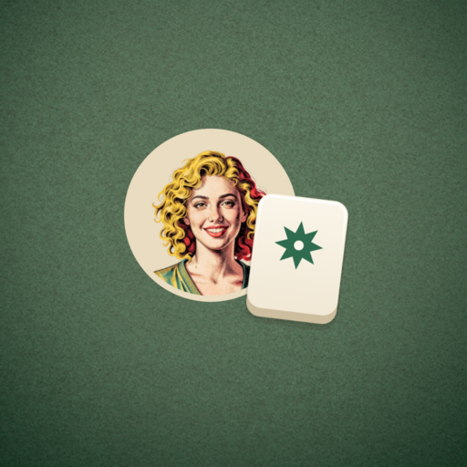

Gizlilik Politikası · Son güncelleme: 28 Eylül 2026
Regulars Tile Rummy, bir Android oyunudur. Geliştirici: Ali Saraç. Paket adı: com.alisrc.tilerummy.
Regulars Tile Rummy sizden hiçbir kişisel bilgi istemez — hesap yok, giriş yok; isim, e-posta, telefon veya konum sorulmaz. Buna karşılık reklam gösterir ve reklamları Google AdMob sunar; AdMob reklamı seçmek ve ölçmek için cihazınızdan bazı teknik bilgileri toplar. Ayrıntısı aşağıda.
Uygulama, işlevini yerine getirmek için aşağıdaki verileri yalnızca cihazınızda işler ve cihazınızda saklar:
Bu veriler uygulamanın özel depolama alanında tutulur; Android'in uygulama yedeklemesi açıksa Google hesabınızın yedeğine, diğer uygulama verileri gibi dahil olabilir. Uygulamayı kaldırmak tüm veriyi siler. Uygulama içinden de silebilirsiniz: Ayarlar → İlerlemeyi sıfırla (iki kez sorar).
Reklamlar Google AdMob tarafından sunulur. AdMob bir üçüncü taraftır ve reklamı seçmek, göstermek, sıklığını sınırlamak, sahteciliği önlemek ve performansını ölçmek için şunları toplayabilir: cihazınızın reklam kimliği (Android Advertising ID), IP adresi, cihaz modeli ve işletim sistemi sürümü, yaklaşık konum (IP'den ülke/şehir düzeyinde), uygulama içindeki reklam etkileşimleriniz.
Bu verilere biz erişmiyoruz. Google'ın bu bilgileri nasıl kullandığı: Google'ın hizmetlerini kullanan site ve uygulamalardan aldığı bilgileri nasıl kullandığı ve Google Gizlilik Politikası.
Reklam kimliğinizi istediğiniz zaman Android'in kendi ayarlarından sıfırlayabilir veya silebilirsiniz: Ayarlar → Gizlilik → Reklamlar.
Yalnızca geçiş reklamı gösterilir ve yalnızca eller arasında, siz "Sonraki el"e bastığınızda: ilk iki elden sonra, en çok üç elde bir ve en az dört dakika arayla. Oyun sırasında reklam yoktur; banner ve ödüllü video yoktur. Regulars Card (Müdavim Kartı) satın alındığında reklam gösterilmez.
Avrupa Ekonomik Alanı, Birleşik Krallık ve İsviçre'deki kullanıcılara uygulama ilk açıldığında Google'ın onay ekranı gösterilir; kişiselleştirilmiş reklamları kabul edip etmediğinizi orada seçersiniz. Kararınızı sonradan değiştirmek için: Ayarlar → Gizlilik seçenekleri.
Regulars Card tek seferlik bir satın almadır ve tamamen Google Play Faturalandırma üzerinden yürür. Kart bilgilerinizi, adınızı ya da faturanızı biz görmeyiz; Google bize yalnızca satın alımın yapıldığı bilgisini verir ve uygulama bunu cihazda tutar. Satın alma Google hesabınıza bağlıdır ve Ayarlar → Satın alımı geri yükle ile yeni bir cihazda geri getirilebilir. Google'ın işlediği veriler için Google Play'in gizlilik politikası geçerlidir.
Analitik yok, çökme bildirimi yok, hesap yok, giriş yok, sosyal bağlantı yok. Kişilerinize, fotoğraflarınıza, dosyalarınıza, mikrofonunuza, kameranıza ya da GPS konumunuza erişilmez. Google AdMob ve Google Play Faturalandırma dışında üçüncü taraf SDK kullanılmaz ve veri hiçbir üçüncü tarafla paylaşılmaz.
Uygulama 18 yaş üstü kullanıcılar için tasarlanmıştır; çocuklara yönelik değildir ve 13 yaşın altındaki kullanıcılardan bilerek veri toplanmaz.
Privacy Policy · Last updated: 28 September 2026
Regulars Tile Rummy is an Android game. Developer: Ali Saraç. Package name: com.alisrc.tilerummy.
Regulars Tile Rummy asks you for nothing personal — no account, no sign-in; no name, email, phone number or location. It does, however, show adverts, served by Google AdMob, which collects some technical information from your device in order to choose and measure an advert. The detail is below.
To do its job, the app processes and stores the following only on your device:
This data lives in the app's private storage; if Android app backup is enabled, it may be included in your Google account backup like other app data. Uninstalling the app deletes all of it. You can also erase it in the app: Settings → Reset progress (it asks twice).
Adverts are served by Google AdMob, a third party. To select, show, cap, fraud-check and measure an advert, AdMob may collect: your device's advertising ID (Android Advertising ID), IP address, device model and OS version, approximate location (country or city level, from the IP address), and your interactions with the adverts in this app.
We have no access to any of it. How Google uses this information is described in How Google uses information from sites or apps that use our services and the Google Privacy Policy.
You can reset or delete your advertising ID at any time in Android's own settings: Settings → Privacy → Ads.
Only interstitial ads are shown, and only between hands, when you press "Next hand": not before the third hand, at most one every three hands and at least four minutes apart. There are no ads during play, no banners and no rewarded video. With the Regulars Card no ads are shown.
Users in the European Economic Area, the United Kingdom and Switzerland are shown Google's consent form the first time the app runs, where you choose whether to allow personalised advertising. To change your mind later: Settings → Privacy options.
Regulars Card is a one-time purchase handled entirely by Google Play Billing. We never see your card details, your name or your invoice; Google tells us only that the purchase was made, and the app keeps that flag on the device. The purchase is tied to your Google account and can be brought back on a new device with Settings → Restore purchase. Google Play's privacy policy applies to what Google processes.
No analytics, no crash reporting, no account, no sign-in, no social connection. No access to your contacts, photos, files, microphone, camera or GPS location. No third-party SDKs other than Google AdMob and Google Play Billing, and no data is shared with any other third party.
The app is intended for users aged 18 and over. It is not directed at children and we do not knowingly collect data from anyone under 13.